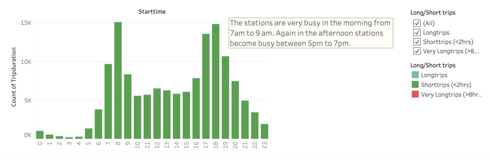
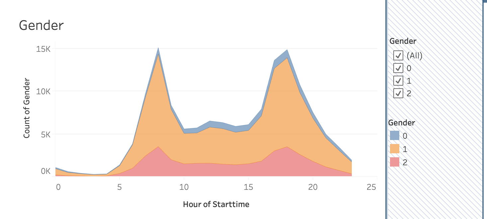
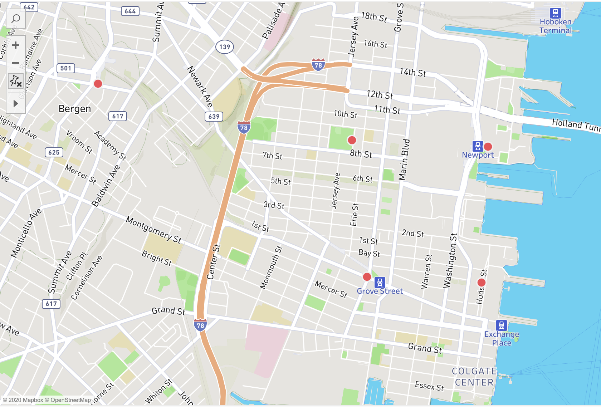

New York city bike program is an affordable way to get around the city. This is a
program that grows in popularity and it's important to analyze these data to see the trends
and find answers to the questions. The data set includes the New York city bike data for the
summer months (July, August and September) of 2019 consisting over 100,000 data points.
I have focused the study on four key questions:
What are the rush hours?
What bikes need servicing/repairs?
How does the bike usage depend on gender?
Why some stations are more popular?
Rush Hours

Bikes are not used much during midnight-5am, based on the start times. Most trips start
from 7-9am or 5-7pm. Least number of trips start from 3-4am. The busiest hours are 7-9am
and 5-8pm. This is not a surprising result at all. However, those who use bikes from 3-5am,
use them for longer average time periods compared to other users. Their average trip time
is 4521 seconds. Most of the rest of the day, the average trip time stays below 1000 seconds.
But there are very few trips during 3-5am. The total daily trip duration is highest between
4pm-8pm. This indicates, that this is the time most people use bikes. The next highest trip
duration is between 7am-9am. Based on the ending time, trips end at the midnight have the
longest average trip time. Overall most trips are short trips that are less than 2 hours.
Also there are some trips that are very long. (more than 8 hours)
Most used bikes
The top 5 most used bikes (based on the total trip time) are 29459, 26173, 29674, 29299
and 29551. These bikes are the ones that most likely need servicing or repairs. On the
other hand, there is one bike, 25421 stands out as the one with the highest average trip
duration. The average trip durations for this bike is about 9 hours. By digging deeper,
it revealed that most of the trips started between 4pm-5pm.
Gender

There are three gender groups in the data set. Males (indicated by ‘1’), Females
(ind1cated by ‘2’) and Unknowns (indicated by ‘0’). They all are very similar in
terms of the trip start time. Majority of bike users are males. A more effective
gender outreach program is required to attract more females.
Popular Bike Stations

By analyzing the top 10 starting and ending stations, it revealed that top 5 stations for
starting and ending are the same. This is an interesting result and needed more digging
to find out why. After looking at several parameters without much success, I looked at
the map for any clues. The map shows four of the top five stations located near subway stations.
The other bike station is located near the Hamilton park. Hamilton park seems to be a popular
place among the bikers. This shows where the bike stations should be located.